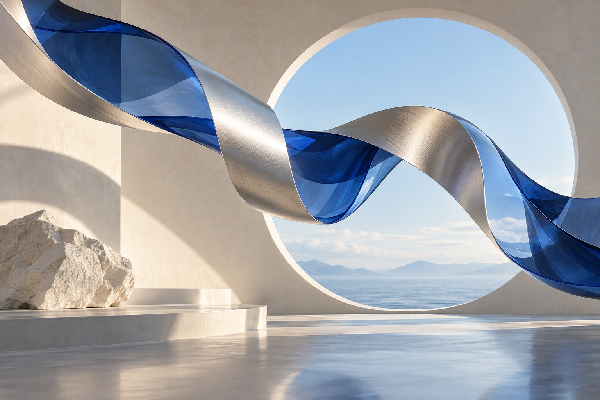

生成時に指定したこと
コバルトブルー、銀、生成りの配色。円形の開口部、柔らかな自然光、立体的な素材感、余白のある横長構図。人物・ロゴ・文字を含めないこと。
 FORM / FIELD
FORM / FIELD04 / GENERATIVE EXPLORATION
Form in motion — AIビジュアルの表現研究

青い透明なガラスと、光を受ける銀の帯。異なる素材が同じ方向へ流れる構図を指定しました。ポートフォリオの「考えを形へ」というテーマを、連続するリボンで表現しています。
コバルトブルー、銀、生成りの配色。円形の開口部、柔らかな自然光、立体的な素材感、余白のある横長構図。人物・ロゴ・文字を含めないこと。
生成画像の構図と不要な文字の有無を確認し、Web掲載用のJPEGへ変換。元画像のメタデータを引き継がず、ページ内でAI生成であることを明記しています。
テキスト指示から生成した画像です。実物の撮影や3Dモデリングの実績を示すものではありません。
作品画像をダウンロード ↓